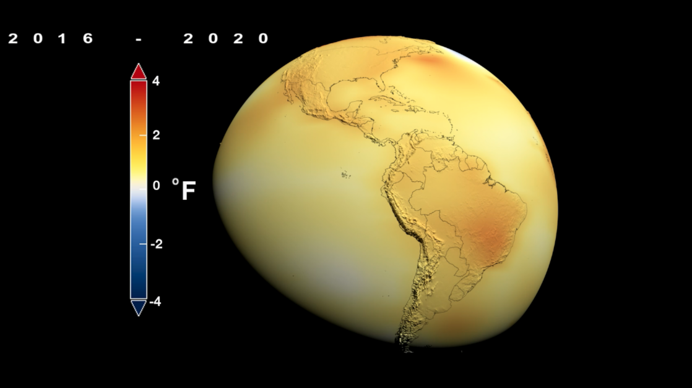
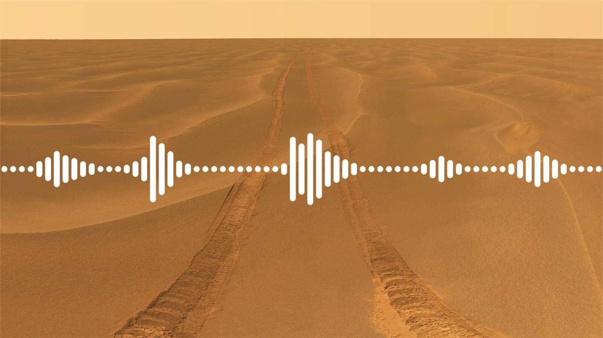
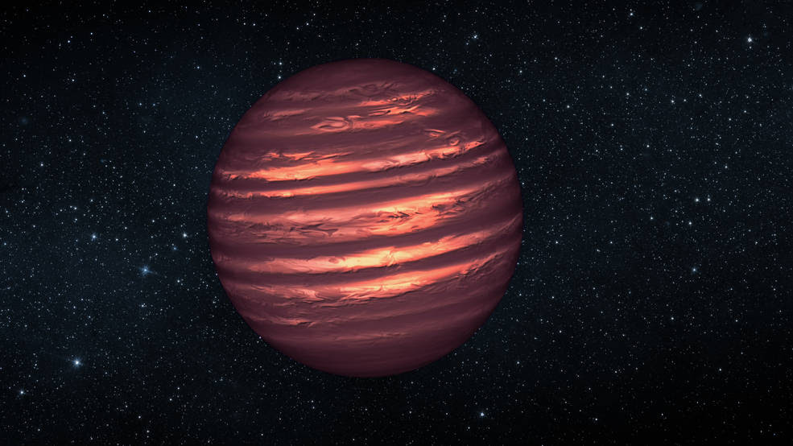
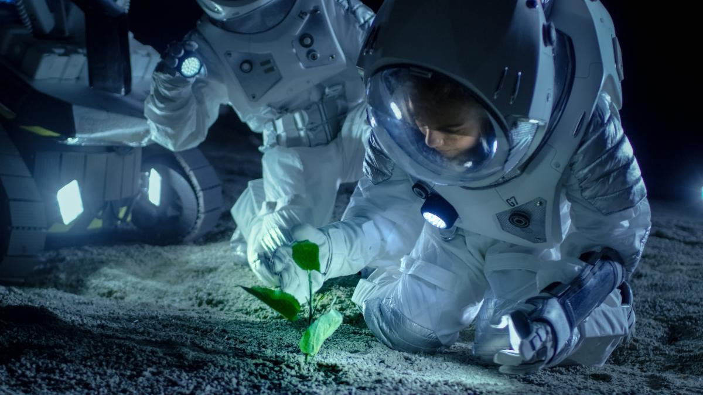
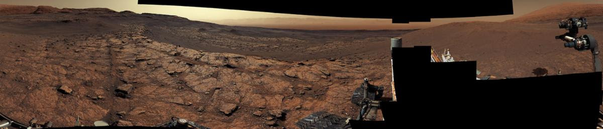
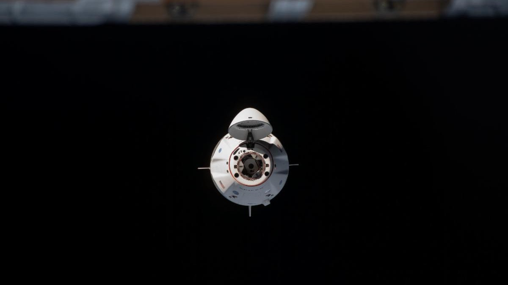
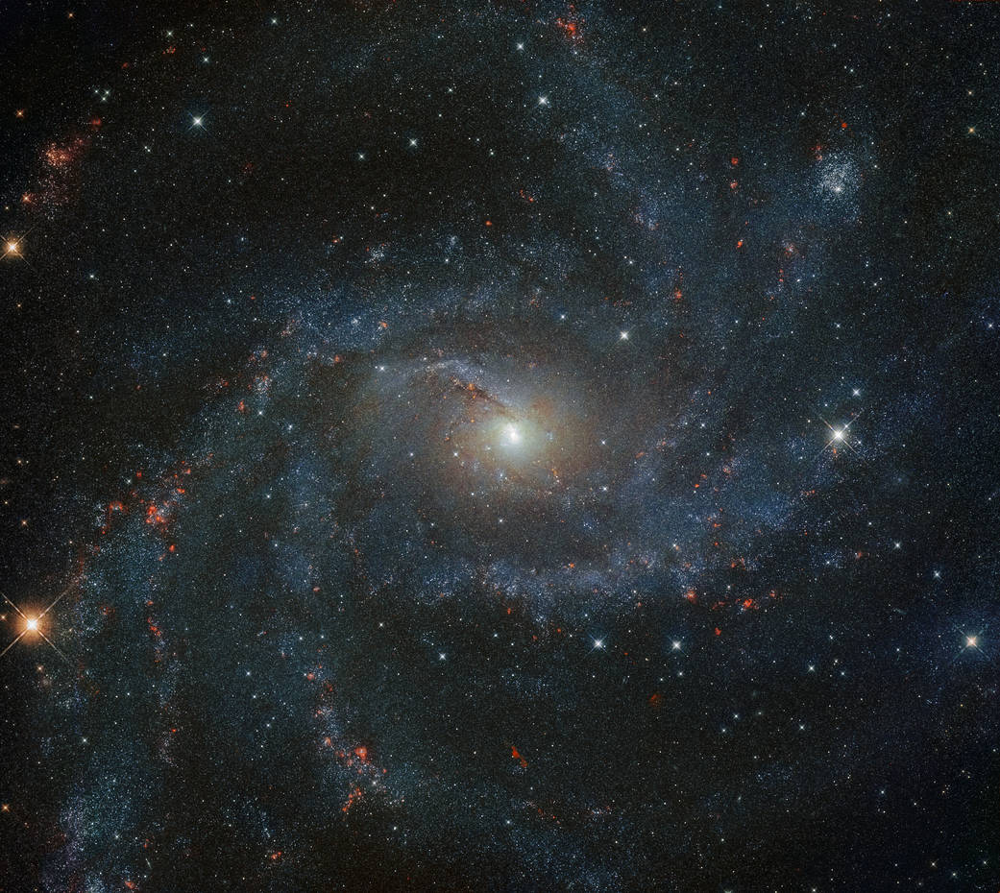

All articles, links and images provided on this site were taken from the official NASA site and are used for educational purposes only!

Tied for Warmest Year on Record
By most accounts, 2020 was a rough year for the planet. Globally, it was the warmest year on record, just barely exceeding the record set in 2016. Overall, Earth’s average temperature has risen more than 2 degrees Fahrenheit since the 1880s.

Sounds of Mars
When our Perseverance rover lands on the Red Planet on Feb. 18, it will not only collect stunning images and rock samples, it may also send back recorded sounds from Mars. Ever wonder how you would sound on Mars? A new interactive lets you sample the difference.

Checking Out the Neighborhood
Citizen scientists from Backyard Worlds: Planet 9, a worldwide network of 150,0000 volunteers, helped astronomers make the most complete map of brown dwarfs — balls of gas not heavy enough to be stars — located near our solar system.

We’re Hungry for Your Ideas
Longer, crewed missions to Mars will require sustainable food systems that keep our astronauts healthy and well fed. Our new NASA prize challenge seeks novel food technologies for space that could benefit Earth, too.

NASA’s Curiosity Rover Reaches Its 3,000th Day on Mars
It’s been 3,000 Martian days, or sols, since our Curiosity rover touched down on Mars on Aug. 6, 2012, and the rover keeps making new discoveries. This panorama, made up of 122 individual images stitched together, was captured by the Mast Camera, or Mastcam, which serves as the rover’s main “eyes.”
Mission to Mars
The Mars Perseverance rover launched to the Red Planet in July 2020, and landing is set for Feb. 18. Teachers and parents, our “Mission to Mars” student challenge offers education plans, activities, live events, and fun ways to learn from the rover’s landing next month.

Dragon Departure
The upgraded SpaceX Dragon cargo spacecraft is about to leave the International Space Station on Jan. 11. This will be the first undocking and return off the coast of Florida for a U.S. commercial cargo spacecraft, enabling science to be returned to researchers more quickly than ever before. NASA astronaut Victor Glover will monitor its departure.
Fire the Engines
We’re targeting the Green Run hot fire test for Jan. 17. This is the culmination of an eight-part test campaign that brings the core stage of the Space Launch System – the rocket that will power our next-generation human Moon missions – roaring to life for the first time. The success of Green Run will "set the stage" for Artemis I uncrewed mission to the Moon in 2021.

Hubble Views a Dazzling ‘Fireworks Galaxy’
In the last century alone, NGC 6946 has experienced 10 observed supernovae, earning its nickname as the Fireworks Galaxy. This image from our Hubble Space Telescope image shows the stars, spiral arms, and various stellar environments of NGC 6946 in phenomenal detail.